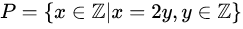
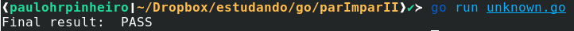

Como saber se um número é par de forma complicada - II
Uma coletânea sobre diversas formas de descobrir se um número é par ou não em Go, II

https://pt.wikipedia.org/wiki/Paridade
Parte II, a missão
No primeiro artigo, listei alguns meios de saber se um número é par, que fogem do convencional, e sem qualquer compromisso sério. O objetivo era buscar soluções absurdas.
Essa de hoje, é a campeã, mas eu não achei mais o autor, para dar o devido crédito.
Baseado na escrita do último dígito
Exato! Baseado em como se escreve por extenso o último dígito, decide-se se o número é par. Mas isso já foi feito. Agora, isso será decidido pela última letra da palavra em inglês que designa o número, observem a tabela a seguir:
número par ímpar
======================
zero o
----------------------
one e
----------------------
two o
----------------------
three e
----------------------
four r
----------------------
five e
----------------------
six x
----------------------
seven n
----------------------
eight t
----------------------
nine e
----------------------
Os números pares terminam com as letras 'o', 'r', 'x' e 't'. Já os ímpares finalizam com 'e' ou 'n', apenas. Obviamente, por questões de "otimização" :), irei montar a condição a partir dos ímpares:
package main
import (
"strconv"
"github.com/paulohrpinheiro/mytest"
)
func inFull(c byte) string {
switch c {
case '0':
return "zero"
case '1':
return "one"
case '2':
return "two"
case '3':
return "three"
case '4':
return "four"
case '5':
return "five"
case '6':
return "six"
case '7':
return "serven"
case '8':
return "eight"
case '9':
return "nine"
default:
panic("wrong value")
}
}
func isEven(n int) bool {
s := strconv.Itoa(n)
l := s[len(s)-1]
f := inFull(l)
last := f[len(f)-1]
return last != 'e' && last != 'n'
}
func main() {
mytest.Run(1000, isEven)
}
Funcionou bonitinho:

Lembrando que o pacote de testes está no texto anterior.